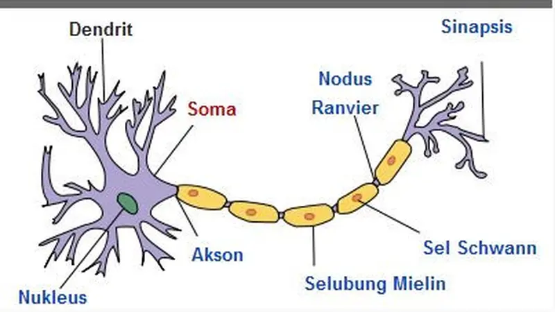

Pentingnya Perawatan Saraf
Perawatan kesehatan saraf penting untuk mencegah penyakit neurologis seperti stroke, epilepsi, dan sklerosis ganda. Menjaga kesehatan otak dan sistem saraf dapat dilakukan dengan pola hidup sehat.
Selengkapnya
